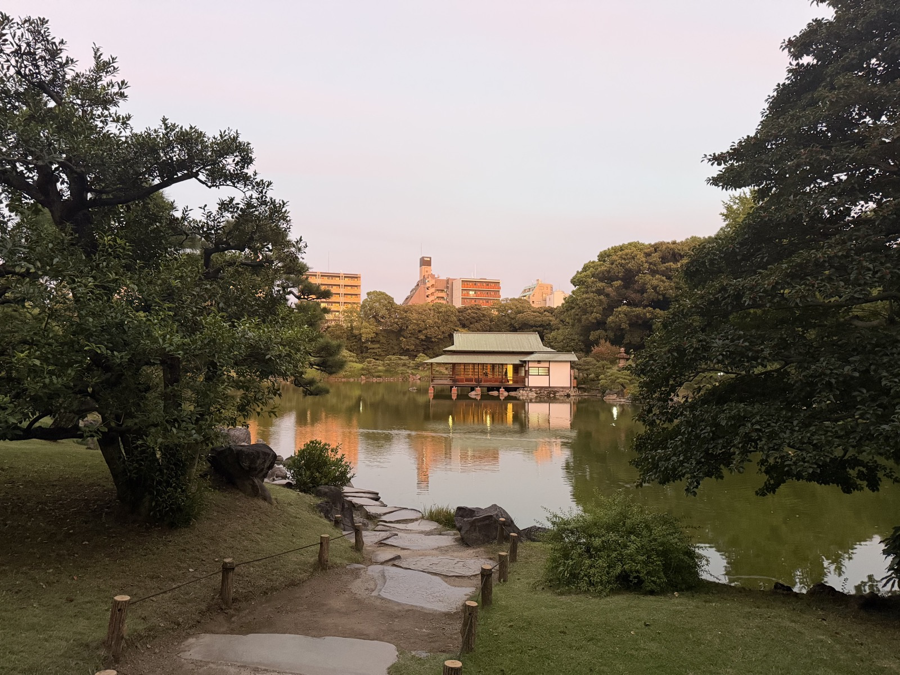
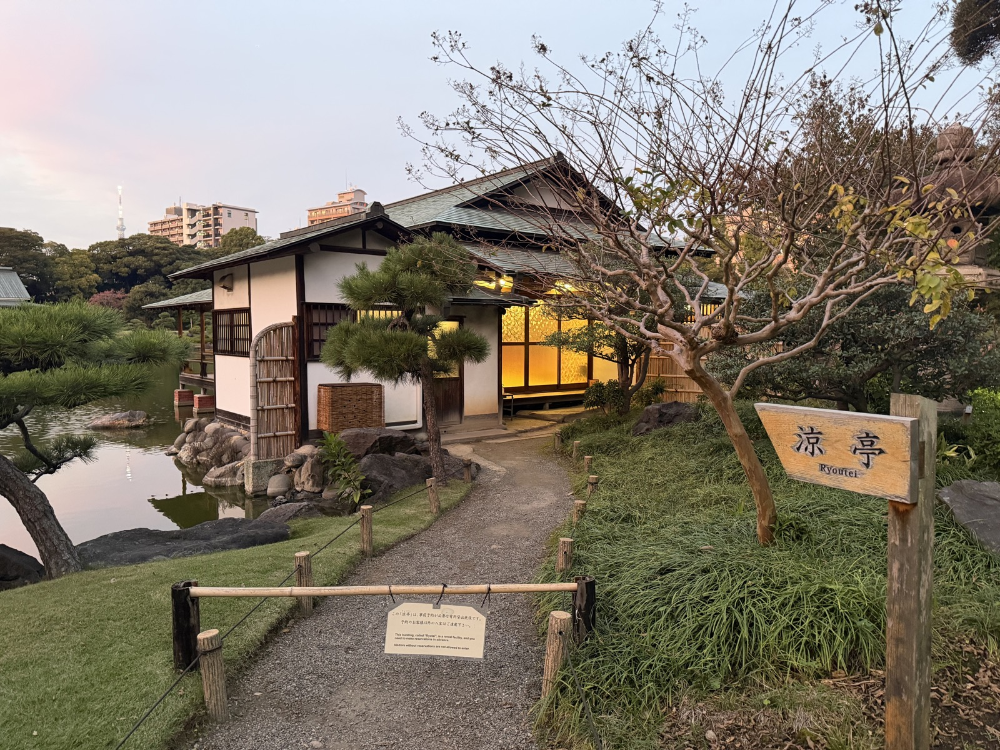
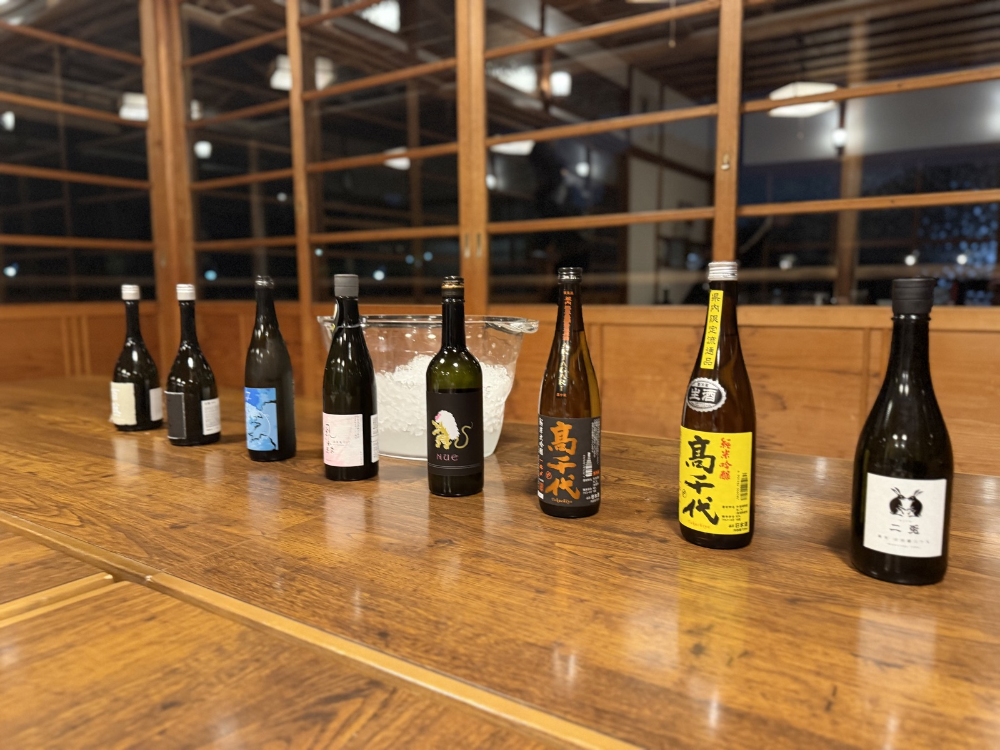
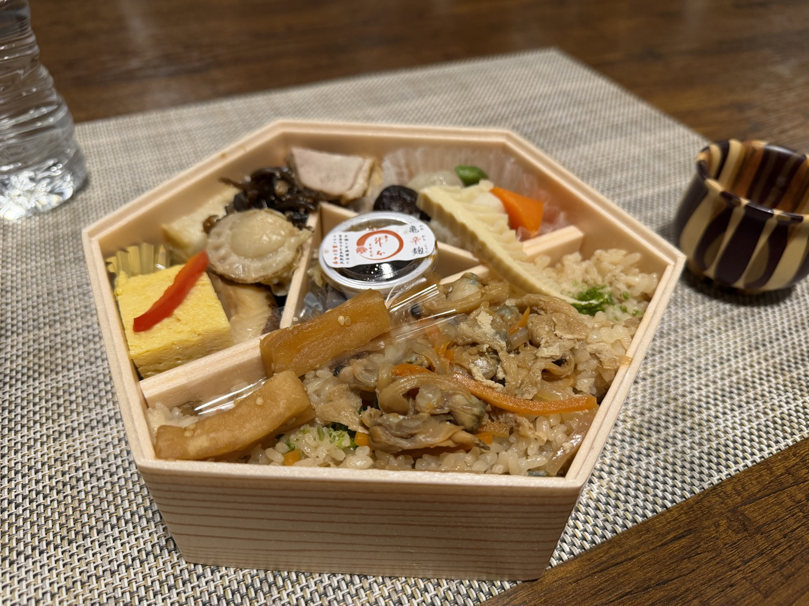

開催レポート — 第1回
第1回 TTC 日本酒の会
START
ここから、はじまりました
2025年10月29日、清澄庭園の涼亭で初めて開催した、TTC 日本酒の会の第1回。夕暮れの庭園を眺めながら、それぞれが推しの一本を持ち寄りました。チャンピオンを決める仕組みは、この次の回から始まります。
※ 第1回は点数・コメントの記録がないため、写真を中心にまとめています。酒名は写真から読み取ったものなので、誤りがあれば直します。
LINEUP
持ち寄った一本
この日に並んだお酒です。

高千代 純米大吟醸 AKIAGARI

二兎（にと）

NUE（ヌエ）

風の森

百黙

青ラベルの一本 （酒名要確認）
GALLERY
その日の景色




